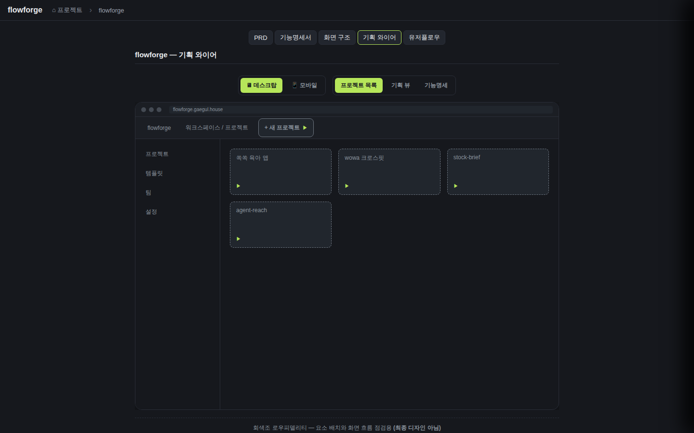
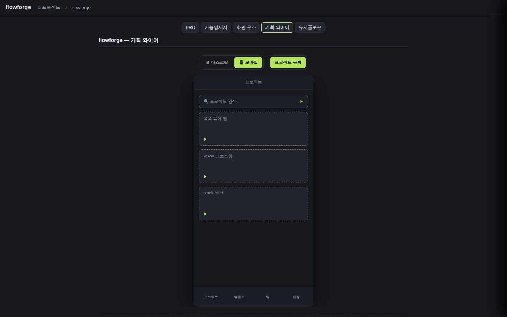
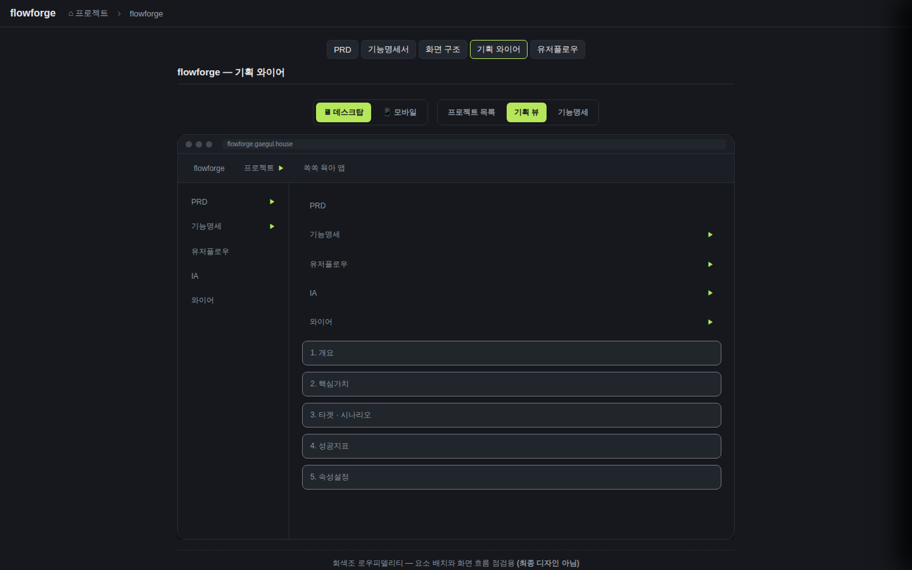

검증일: 2026-07-08T15:10:00+09:00 · 환경: server(적용: server/ + jest) · web(적용: web/ + WireframeDeviceFrame.tsx, 라이브 8812 gstack 실픽셀) · shared(빌드/타입) · android/ios(적용 불가: 디렉터리 없음) · run: run-20260708-1510 · commit 15d4199f (dirty)
PASS 5 · FAIL 0 · 검증 안 함 0 · SKIPPED 0
| Requirement | Scenario | Layer | 검증 수단 | 탐지 근거(basis) | 결과 | 증거 |
|---|---|---|---|---|---|---|
| 와이어는 디바이스 프레임 안에 화면 레이아웃을 배치 렌더한다 | 데스크탑 프레임에 배치 렌더 (상단 메뉴+사이드+본문 그리드가 실제 화면처럼 배치, 세로 목록 아님) | web | 라이브 앱(8812) → flowforge → 기획 와이어 탭. gstack DOM/geometry 실측 + 목업 대조 | web + WireframeDeviceFrame.tsx 라이브 렌더 (data-testid=wf-df-desktop/topbar/sidebar/body) | ✓ PASS |  |
| 와이어는 디바이스 프레임 안에 화면 레이아웃을 배치 렌더한다 | 모바일 프레임에 배치 렌더 (폰 프레임 안 상단 타이틀바+본문+하단 메뉴바) | web | 라이브 앱 → 모바일 토글. gstack 영역·수직순서 실측 | web MobileScreen (data-testid=wf-df-mobile/topbar/body/bottombar) | ✓ PASS |  |
| 와이어는 디바이스 프레임 안에 화면 레이아웃을 배치 렌더한다 | 요소 클릭 → 화면 이동 (goto 있는 요소 클릭 시 대상 화면 전환) | web | '쏙쏙 육아 앱' 카드(goto=skeleton) 클릭 → 기획 뷰 전환. 2차 홉 기능명세(goto=features) → 트리 전환 | web 라이브 상호작용 (Element onClick→onGoto→setActiveId, data-goto 배선) | ✓ PASS |  |
| 와이어는 디바이스 프레임 안에 화면 레이아웃을 배치 렌더한다 | change 경로 와이어·골든 무저촉 (새 렌더러 추가 시 change 경로 wireframeBuilder·WireframePanel·golden 무변경 통과) | server | npm test 재실행 — docsAdapter.test.ts(14)+golden.test.ts(3)+planningWireframeFixture.test.ts(6) 등 전체 | server jest 리포터 카운트 (PIPESTATUS 실측 exit 0) | ✓ PASS | npm test → Test Suites 37/37 passed / Tests 399/399 passed / 0 failed / 0 skipped. golden 3/3 PASS(회귀 0). docsAdapter(change 경로 Wireframe/WireBox) 14/14 PASS. 컴파일 에러 0. build/typecheck/lint 모두 exit 0 |
| 폐기된 element 세로박스 접근을 제거한다 | element 파싱 잔재 제거 (screenRegistry element 파싱 없음, features.md에 element 주석 없음, 관련 테스트 새 모델로 대체) | server | 독립 grep 재검증 — RE_ELEMENT·ScreenElement·planningWireframeBuilder(src)·element 주석(docs/서버/features.md) | server/src·docs 정적 grep (본체 재실행, apply 통과분 불신) | ✓ PASS | grep RE_ELEMENT server/src → 0(exit1). grep ScreenElement src+shared+web → 0. find planningWireframeBuilder*(src) → 없음(소스 삭제). grep element 주석 docs/+server/src+web/src → 0. features.md element 카운트 → 0. planningWireframeFixture.test.ts(6, 새 모델)로 대체. server/dist 잔재는 gitignore·untracked 스테일 빌드 산출물(소스 아님) |
| Requirement | null | 빈값 | 잘못된타입 | 경계값 | 에러경로 | 동시성 | 대량 | 특수문자 | 판정 |
|---|---|---|---|---|---|---|---|---|---|
| 와이어는 디바이스 프레임 안에 화면 레이아웃을 배치 렌더한다 | ✓ | ✓ | ✓ | N/A | ✓ | N/A | N/A | N/A | ✓ 충분 |
| 폐기된 element 세로박스 접근을 제거한다 | N/A | N/A | N/A | N/A | N/A | N/A | N/A | N/A | ✓ 충분 |
✓=covered · N/A=해당없음(사유 hover) · ✗=missing. happy-path만이면 검증 불충분 → 최종 FAIL 차단.
| Layer | 상태 | ran | passed | failed | 근거/사유 |
|---|---|---|---|---|---|
| server | ✓ PASS | 399 | 399 | 0 | 빌드·타입·린트·테스트 전부 PASS. golden 회귀 0, 컴파일 에러 0 |
| web | ✓ PASS | 3 | 3 | 0 | 3개 UI 시나리오 실픽셀 PASS. 콘솔 에러 0. 목업과 구조 일치(세로 목록 아님) |
| android | – SKIPPED | 0 | 0 | 0 | 적용 불가 — 웹 전용 |
| ios | – SKIPPED | 0 | 0 | 0 | 적용 불가 — 웹 전용, macOS 아님 |
✓ PASS 통과
archiveGate.open = true (PASS일 때만 true). verify.json이 이 값을 archive 게이트에 전달.
{kind=link}
{kind=link}
{kind=link}